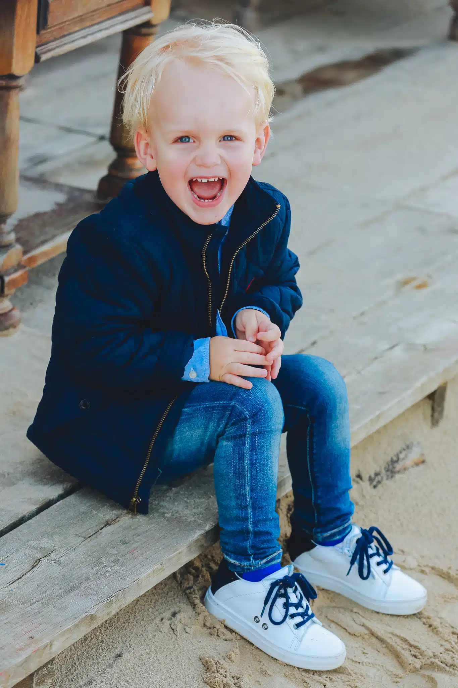
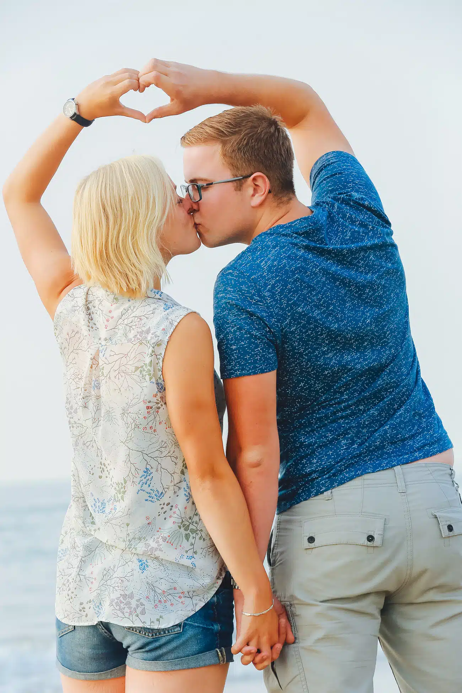

Aanbod
Alle fotoshoots Utrecht
Vind snel de fotoshoot die past bij jouw moment, doel of cadeau.
Deze overzichtspagina helpt bezoekers kiezen tussen portret fotoshoot, familie fotoshoot, zakelijke fotoshoot, baby fotoshoot, zwangerschapsshoot, glamour, model, love shoot en meer in Utrecht.

Kies je fotoshoot.
Alle bestaande pagina’s blijven bestaan; dit is alleen een extra ingang voor bezoekers.

Portret fotoshoot
Voor profiel, portfolio, social media of persoonlijk beeld.

Familie fotoshoot
Gezin, generaties, kinderen en spontane combinaties.

Zakelijke fotoshoot
LinkedIn, headshot, teamfoto en bedrijfsprofiel.

Baby & kids
Newborn, baby, peuter, kinderen en ouders samen.

Zwangerschap
Belly shoot alleen, met partner of met kinderen.

Love shoot
Voor koppels, verloving, jubileum of cadeau.

Glamour
Styling, uitstraling, poses en luxe studiosfeer.

Model fotoshoot
Portfolio, casting, fashion en poseerbegeleiding.

Vriendenshoot
Samen lachen, poseren en herinneringen maken.

Bruiloft
Reportage, ceremonie, sfeer en portretten.

Creatieve shoot
Eigen thema, verjaardag, idee of creatieve sfeer.

Cadeaubon
Geef een fotoshoot cadeau voor elk moment.
Weet je al welke shoot je wilt?
Plan je shoot of bekijk eerst de werkwijze en veelgestelde vragen.
Boek nu!Populaire inspiratie.
Veel bezoekers zoeken specifiek op locatie, prijs of type fotoshoot.